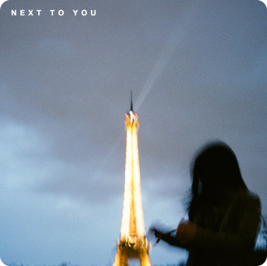
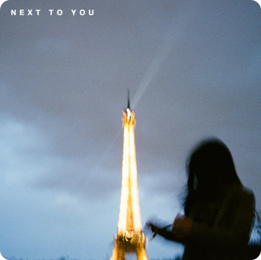

next to you
New West
Every time I lose my voice
It's probably cause I'm singing about you
Been trying to find the words to say
But they're just another thing I seem to lose
Do you remember the time we got drunk in Versailles
And we lost our shit?
Tell me are we just waiting for each other to say
Let's do it all again?
Cause' if there's one thing we're told, c'est la vie
But I miss you more each day you're not with me
And just know when I sleep
That I'm dreaming of the only place I wanna be
And where I wanna be is next to you
I've been broken for so long
I need a break from trying to fix myself
Been running out of drugs to try
To try and fill the spaces that you left
We got too high in Paris
You were embarrassed when I made you dance
Tell me are we just waiting for the other to say
Let's do this all again
Cause' if there's one thing we're told, c'est la vie
But I miss you more each day you're not with me
And just know when I sleep
That I'm dreaming of the only place I wanna be
And where I wanna be is next to you
Remember the time we got drunk in Versailles
And we lost our shit
We got too high in Paris
You were embarrassed when I made you dance
Cause' if there's one thing we're told, c'est la vie
But I miss you more each day you're not with me
And just know when I sleep
That I'm dreaming of the only place I wanna be
Aaahh
(Are we just waiting)
For each other to say we should do this all again